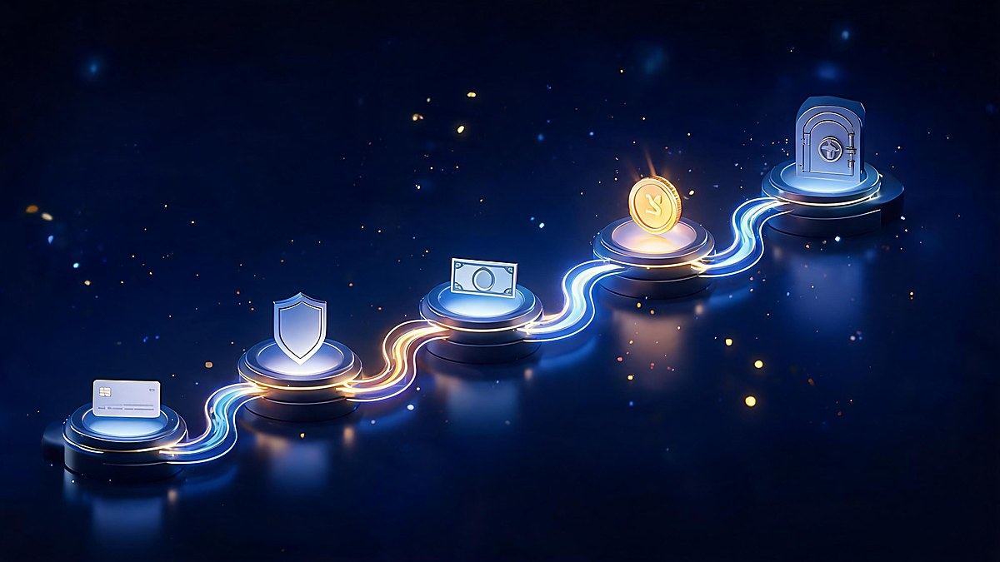
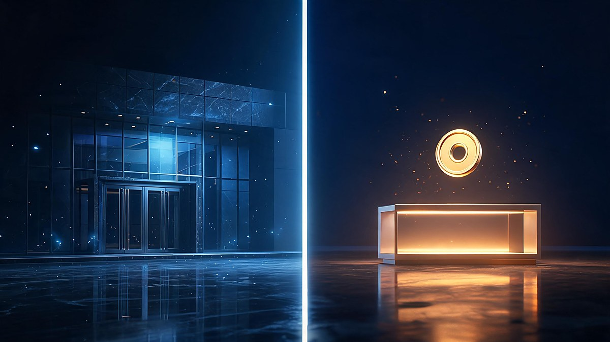
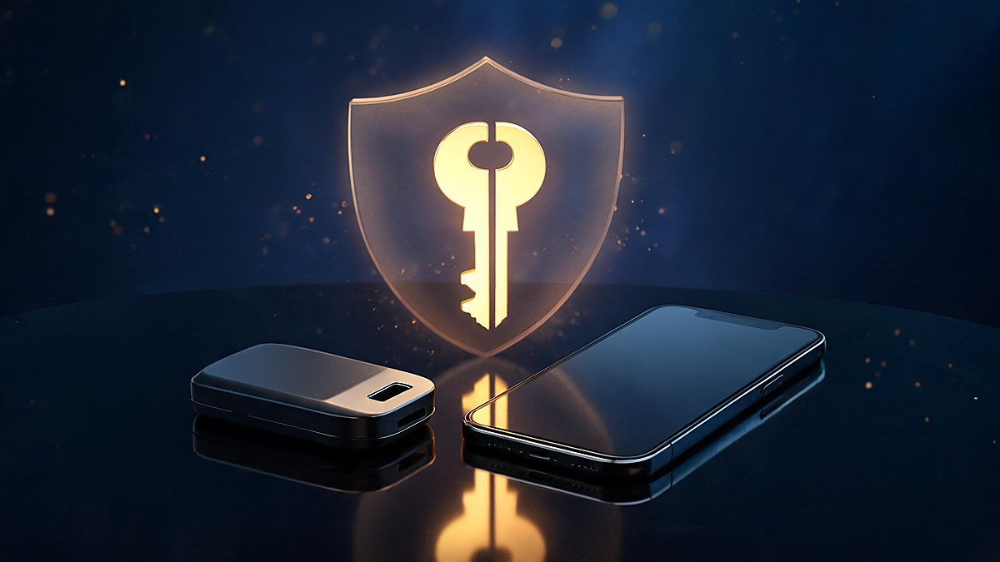
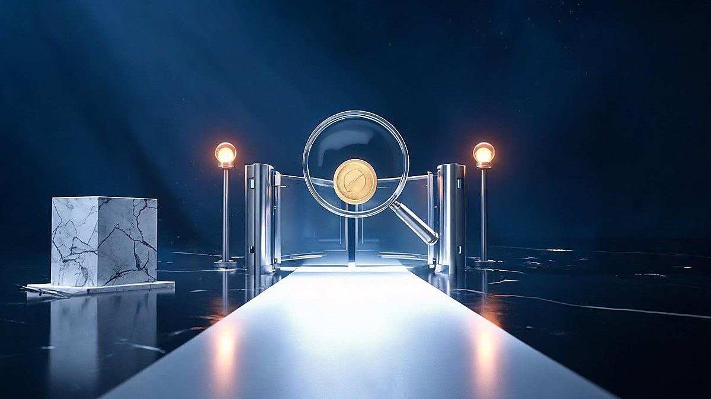

XRP trades on major exchanges like Coinbase, Kraken, and Bitstamp — and "Ripple stock" cannot be bought anywhere, because Ripple is still a private company. If you are searching "where to buy Ripple (XRP): how to buy XRP", the honest answer has two parts: the token is easy to buy, the company is not buyable at all — and this guide covers both halves: how to buy XRP safely, and what your realistic options are for the company behind it.
You can buy XRP on major exchanges like Coinbase, Kraken, and Bitstamp in the United States, and on FIU-registered exchanges with INR funding in India. Ripple itself is a private company — there is no Ripple stock to buy yet, so purchasing XRP does not make you a shareholder.
The fastest answer: XRP trades on major centralized exchanges — Coinbase, Kraken, and Bitstamp in the United States, plus Binance, Bybit, and KuCoin internationally. In India, FIU-registered platforms support XRP with INR funding. Availability varies by region, so the exchange you can legally use likely depends on where you live — and licensing could change, so double-check before depositing.
But "where" is the easy half. Choosing *which* exchange deserves five minutes of checking, because fees, liquidity, and custody quality differ more than most beginners expect. Before funding any account, work through these criteria:
One caution shapes everything else in this guide: Ripple and XRP are different things. Ripple is a private company building payment software; XRP is a cryptocurrency that runs on its own open-source ledger, the XRP Ledger. You cannot buy "Ripple stock" on any exchange today — sections below explain why, and what your realistic options are.

Buying XRP follows the same five-stage pattern as most cryptocurrencies. Each step matters; skipping the last one is the most common expensive mistake.
If you have never opened a crypto account before, our walkthrough of setting up and verifying a crypto exchange account covers the KYC stage in detail, and our comparison of which crypto exchange is safest for beginners helps with the exchange choice itself.
| Platform | Best known for | Region notes | XRP withdrawal to own wallet |
|---|---|---|---|
| Coinbase | US-regulated simplicity, official XRP guide | United States and 100+ countries | Yes |
| Kraken | Deep liquidity, strong security record | US (registered), EU, global | Yes |
| Bitstamp | Long-running EU-licensed exchange | EU, US, global | Yes |
| Binance | Largest global volume, lowest spot fees | Global; India access via FIU-registered entity | Yes |
| FIU-registered Indian platforms | INR funding via UPI/IMPS with local KYC | India only | Yes (platform-dependent) |

No — Ripple stock is not publicly available. Ripple Labs, the company behind XRP and the XRP Ledger, remains privately held. As of late 2025 the company confirmed it has "no plan, no timeline" for an IPO, and Ripple's president reiterated in January 2026 that the company intends to stay private for now, with its balance sheet strong enough not to need public markets.
This is the single most common confusion in the "where to buy Ripple" search: buying XRP does not give you ownership in Ripple. XRP is a digital asset used on the XRP Ledger for fast, low-cost transfers; Ripple is a separate private company that builds products on and around that ledger and holds a large amount of XRP. The two are connected by history and by Ripple's XRP holdings, but a token purchase is not a share purchase — no equity, no voting rights, no dividend.
The distinction has a practical edge too. When Ripple's legal battle with the SEC ended in August 2025 with a $50 million settlement (with $75 million of the original penalty returned), XRP — not Ripple the company — received the regulatory clarity that opened the door to broader exchange availability and XRP ETF products in the United States.
Since Ripple has not filed for an IPO, there is no public market for its shares — no ticker, no brokerage listing, no stock price to track. Anything offering "Ripple stock" to ordinary retail investors outside official channels deserves skepticism.
What exists today:
Two red flags to treat seriously: anyone selling "pre-IPO Ripple shares" with guaranteed returns, and any site implying XRP purchases convert to stock after an IPO. Both patterns appear in common crypto scams, and neither survives contact with the facts above.

Storage is where beginners lose money — not through price drops, but through custody mistakes. XRP gives you two broad options, and the right choice depends on how much you hold and how often you trade:
One XRP-specific trap deserves its own warning: destination tags. When withdrawing XRP from an exchange to another exchange, most platforms require a numeric destination tag (also called a memo) attached to the withdrawal. Get it wrong or omit it, and your funds may well be unrecoverable — exchange support desks process these requests manually, when they can at all. Always copy the tag exactly as shown, and send a small test amount first when using a new address.
Indian readers have a specific path, and it runs through FIU-registered exchanges. India's Financial Intelligence Unit requires crypto platforms serving Indian users to register under the PMLA; platforms on the registered list support INR funding through UPI, IMPS, NEFT, or cards, though exact rails vary by platform.
The practical flow: pick a FIU-registered exchange, complete KYC (PAN is mandatory), add INR, and buy XRP against INR or route through a stablecoin pair. Two India-specific cautions: first, the registered list changes — the FIU has pursued unregistered offshore exchanges, so verify the platform's current status rather than trusting old guides. Second, crypto gains are taxable in India (30% on gains plus applicable cess, with a 1% TDS on transfers above thresholds) — the exchange's tax report helps, but the obligation is yours.
Note on availability: some global exchanges operate in India only through registered entities; features and fees can differ from their international apps. Check the India-specific fee schedule before depositing.
A skeptical reader could fairly make this argument: XRP's price still swings more in a week than stock markets move in a year, the token's utility case competes with stablecoins that do the same job with less volatility, and Ripple holding a large XRP supply means a single company's decisions can pressure the market. Those are real risks, not FUD — and anyone unwilling to hold through multi-month drawdowns should likely not buy this asset at all.
The honest counter is that volatility and utility are separate questions. The SEC settlement removed the largest legal overhang, the ledger has processed transfers reliably at scale for over a decade, and exchange availability has widened. Neither side of that argument guarantees a price outcome — which is precisely why the checklist below is about protecting your downside, not predicting the upside.

Five checks take ten minutes and prevent most of the losses beginners actually experience:
XRP has traded near $1.39 as of October 10, 2026 — up sharply from its 2024 levels, down from its 2025 peaks. Prices move and could move sharply; your checklist should not.
Security rule of thumb: anyone offering "guaranteed XRP returns" or "pre-IPO Ripple shares" to retail buyers is running a scam. Real opportunities never arrive with urgency and payment requests in the same message.
Exchange availability was checked against official exchange documentation (including Coinbase's own XRP purchase guide) and independent references; Ripple's private status against company statements reported by CryptoSlate and Investing.com; the SEC settlement against the SEC's own announcement and Reuters; India's requirements against FIU-related reporting by CoinDesk and platform guides. Prices were date-stamped at verification time and will move — treat every number here as a snapshot, not a quote. This article is general information, not financial advice; it does not know your jurisdiction, tax situation, or risk tolerance.
XRP is a cryptocurrency that runs on the XRP Ledger, an open-source blockchain built for fast, low-cost transfers. It is used to move value across the ledger and, increasingly, in institutional payment products. XRP is a digital asset — not a share of any company.
No. Ripple is a private company with no publicly traded stock. In late 2025 it confirmed it had "no plan, no timeline" for an IPO, and in January 2026 its president said the company intends to stay private. Buying XRP does not make you a Ripple shareholder.
On major centralized exchanges — Coinbase, Kraken, and Bitstamp in the United States, plus Binance, Bybit, and KuCoin in other regions. In India, use FIU-registered platforms that support INR funding. Availability depends on your country.
That depends on your goals and risk tolerance, and nobody can promise returns. XRP has strong liquidity and, since the August 2025 SEC settlement, clearer regulatory standing in the US — but it remains a volatile asset whose price has swung by large percentages in weeks. Only invest what you can afford to lose, and verify current news before deciding.
An XRP wallet stores the keys that control your XRP. Hardware wallets (like Ledger devices) keep keys offline for long-term holding; software wallets like Xaman are built for the XRP Ledger and suit smaller amounts. Exchange wallets are convenient but keep custody with the platform.
Choose a FIU-registered exchange, complete KYC with PAN, fund with INR via UPI, IMPS, NEFT, or card, then place your order. Verify the platform's current FIU registration status before depositing, and remember crypto gains are taxable in India.
If your goal is XRP, the path is short: a registered exchange, a funded account, a careful first purchase, and a wallet plan for anything you intend to hold. If your goal was Ripple the company, the honest answer is that you cannot buy it yet — no IPO, no public ticker — and any offer claiming otherwise is a red flag worth walking away from.
This article is general information for a global audience, verified October 11, 2026. Crypto assets are volatile and regulated differently by country; nothing here is financial, legal, or tax advice. Check your local rules, verify exchange status in your jurisdiction, and never invest more than you can afford to lose.